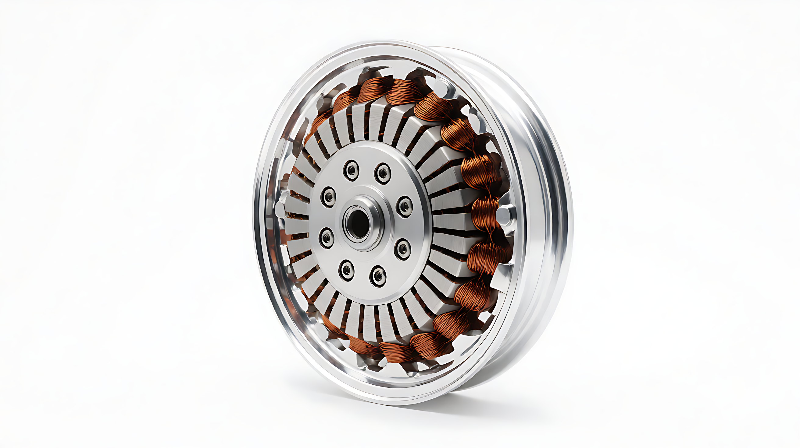

电机：轮毂与中置两条技术路线
电机是动力的执行端。轮毂电机结构简洁、成本低；中置电机重心低、扭矩大、操控好。两条路线 PXID 均提供，按车型定位选择。

轮毂电机HUB
电机集成于车轮轮毂内，结构简洁、成本低、免维护。
- 集成于后轮/前轮轮毂，传动链路短
- 结构简洁、噪声低、维护少
- 适合电动自行车与轻便电摩
- 常见 250W–1500W

中置电机MID
电机位于踏板曲柄处，重心低、扭矩大、操控与爬坡更强。
- 重心居中，整车操控更稳定
- 扭矩大，爬坡与载重能力强
- 适合电摩与高性能车型
- 常见 1000W–5000W
参数与选型
电机核心参数：功率、扭矩、电压平台、效率、防护等级、冷却方式。轮毂方案胜在简洁低成本，中置方案胜在动力与操控——PXID 按车型定位给出匹配建议。
